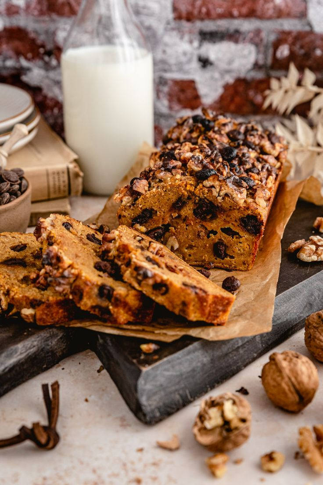

Bolo de Abóbora com Nozes
Um bolo macio e úmido de abóbora, com pedaços crocantes de nozes, perfeito para lanches e sobremesas acolhedoras.

Ingredientes
Rende 12 pedaços
- 2 xícaras de abóbora cozida e amassada
- 3 ovos
- 1 xícara de óleo
- 2 xícaras de açúcar
- 2 e 1/2 xícaras de farinha de trigo
- 1 colher de sopa de fermento em pó
- 1 xícara de nozes picadas
- 1 colher de chá de canela em pó (opcional)
Modo de Preparo
Tempo estimado: 50 minutos
- Preaqueça o forno a 180 °C e unte uma forma com manteiga e farinha.
- Em uma tigela, misture a abóbora amassada, ovos, óleo e açúcar até ficar homogêneo.
- Adicione a farinha, o fermento e a canela, misturando delicadamente.
- Acrescente as nozes picadas e incorpore à massa.
- Despeje a massa na forma e leve ao forno por 35 a 40 minutos ou até que um palito saia limpo.
- Deixe esfriar antes de cortar e servir.
Dica do Chef: Para um toque especial, polvilhe açúcar de confeiteiro ou prepare uma calda de chocolate para cobertura.